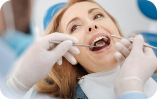

Протезирование зубов
Протезирование на имплантах Безметалловые коронки Керамические коронки Циркониевые коронки Керамические накладки Культевые вкладки Съемное протезирование Несъёмное протезирование Бюгельные протезы Мостовидные протезы Протезы без нёба При полном отсутствии зубов При частичном отсутствии зубов Коронки на передние зубы Коронки на жевательные зубы Нейлоновые протезы CAD/CAM моделирование
Ортодонтия
Брекеты Металлические брекеты Керамические брекеты Выравнивание зубов у взрослых Несъемные аппараты для исправления прикуса Съемные аппараты для исправления прикуса Аппарат ALF для исправление прикуса Аппараты Бионатор для исправление прикуса Врач ортодонт Ортодонтические пластинки для исправления прикуса Добавить систему hh4, элйнеры (Inviziline, РФ) Сапфировые брекеты Невидимые брекеты Коррекция прикуса винирами Без брекетов Брекет-системы Damon Брекеты Mini Diamond

Лечение зубов
Лечение кариеса Лечение глубокого кариеса Пришеечный кариес Пломба на зуб Лечение пульпита Лечение каналов зуба Лечение передних зубов Лечение под микроскопом Реставрация зубов Лечение кисты зуба Подготовка к лечению зубов Экстренное лечение зубов Удаление зубного камня Ультразвуковая чистка зубов Чистка зубов Air Flow
Хирургия
Удаление зубов Удаление зуба мудрости Лечение кисты зуба Лечение гингвита и пародонта Костная пластика Синус-лифтинг Гиперплазия нижней челюсти
Детская стоматология
Лечение зубов Удаление зубов Пластика уздечки Профессиональная гигиена Воспаление дёсен у детей Фторирование зубов Серебрение зубов Лечение молочных зубов Брекет-системы для детей
Эстетическая стоматология
Люминиры Установка виниров Композитные виниры Виниры E-Max Реставрация зубов композитом Керамические накладки Ультраниры Нанониры